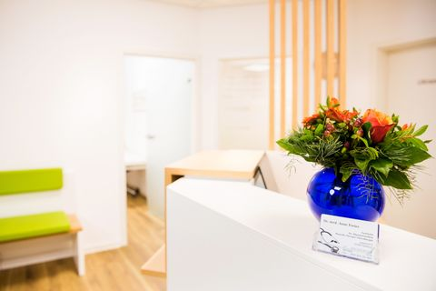

Gemeinschaftspraxis für Allgemeinmedizin
Ihre Hausarztpraxis im Zentrum von Volksdorf
Drei Fachärztinnen, die Sie kennen und sich Zeit nehmen – von der hausärztlichen Versorgung über Manuelle Medizin und Psychosomatik bis zu Akupunktur und Ultraschall.
- Gesetzlich & privat versichert
- Barrierefrei per Aufzug
- Direkt am U-Bahnhof Volksdorf

InfektsprechstundeBitte vorher anrufen
Wir haben eine Infektsprechstunde eingerichtet. Sollten Sie unter einem Infekt der oberen Atemwege, Fieber und/oder Gliederschmerzen leiden, rufen Sie bitte immer vorher an oder schreiben Sie eine E-Mail, um einen Termin in der Infektsprechstunde zu erhalten.
Dort behandeln wir Ihre Beschwerden und leiten bei Bedarf weitere Untersuchungen ein. Wir danken für Ihre Mitarbeit – bleiben Sie gesund.
Ihr Praxisteam
Leistungen
Was wir für Sie tun
Als Hausarztpraxis begleiten wir Sie bei allen gesundheitlichen Fragen – und bringen zusätzlich besondere Schwerpunkte mit.
Hausärztliche Versorgung
Erste Anlaufstelle bei akuten Beschwerden und chronischen Erkrankungen – wir kennen Sie und Ihre Geschichte.
Mehr erfahrenManuelle Medizin & Chirotherapie
Sanfte Behandlung von Funktionsstörungen an Wirbelsäule und Gelenken mit den Händen.
Mehr erfahrenPsychosomatische Grundversorgung
Körper und Seele gehören zusammen – wir nehmen uns Zeit für das Gespräch.
Mehr erfahrenAkupunktur
Ergänzende Behandlung aus der Traditionellen Chinesischen Medizin, z. B. bei Schmerzen.
Mehr erfahrenUltraschalldiagnostik
Strahlenfreie Untersuchung von Bauchorganen und Schilddrüse direkt in der Praxis.
Mehr erfahrenHausbesuche
Wenn Sie nicht zu uns kommen können, kommen wir zu Ihnen.
Mehr erfahrenÄrzteteam
Wer Sie behandelt
Drei Fachärztinnen für Allgemeinmedizin mit langjähriger klinischer und hausärztlicher Erfahrung.
Gut zu wissen
So läuft es bei uns
Termine
Bitte vereinbaren Sie einen Termin, damit wir uns Zeit für Ihr Anliegen nehmen können und Sie nicht unnötig lange warten. In akuten und dringenden Fällen rufen Sie an, damit wir mit Ihnen den möglichst günstigsten Zeitpunkt für Ihr Kommen abstimmen können.
Rezepte & Überweisungen
Für Rezept- und Überweisungswünsche stehen Ihnen unser Rezepttelefon und unsere E-Mail-Adresse zur Verfügung. Die Unterlagen können am folgenden Werktag in der Praxis abgeholt werden.
Rezepttelefon (040) 645 04 673
info@allgemeinmedizin-volksdorf.de
Hausbesuche
Als Hausärztinnen ist es für uns selbstverständlich, schwerkranke, bettlägerige oder vorübergehend immobile Patientinnen und Patienten zu Hause zu besuchen.
Anfahrt
Ihr Weg zu uns
Im Zentrum von Volksdorf gelegen, sind wir mit allen Verkehrsmitteln direkt erreichbar.
Wir sind für Sie da
Termine vergeben wir telefonisch – so können wir uns Zeit für Ihr Anliegen nehmen. In dringenden Fällen rufen Sie bitte direkt an.